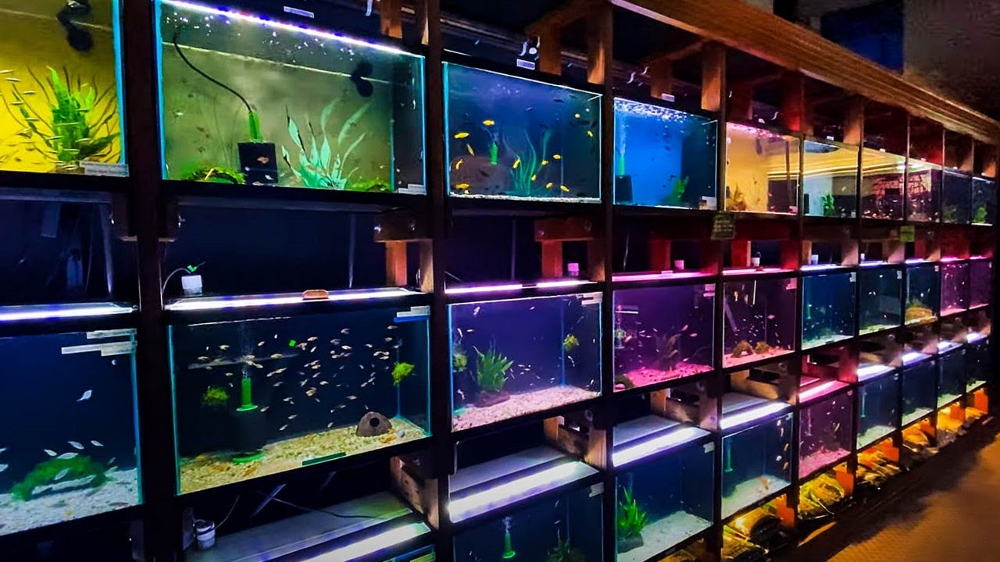

Get to know more about us!
Welcome to Kotoko Aquarium Store, established in 2007, catering exclusively to young adults and adults with a stable financial income who share a passion for vibrant aquatic life. Nestled in Kuala Lumpur, our store is the realization of a dream by aquatic enthusiasts dedicated to creating a welcoming haven for like-minded individuals. Specializing in a carefully curated selection of vibrant fish, our store has evolved into a hub of expertise and passion. Our knowledgeable staff is here to assist hobbyists of all levels on their aquatic journey. Immerse yourself in our contemporary store design, reflecting the evolving trends and beauty of the aquatic world. Join us at Kotoko Aquarium Store and dive into a world of beauty, innovation, and community.